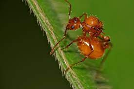

Finished, or nearly so. Some published elsewhere, some not.
What do wars between ant colonies tell us about human wars?

We take wars between ant colonies seriously, and ask: “How should ant wars change how we think of war itself?”
Adversarial examples are surprisingly similar to workarounds that fix mistakes. There are consequences.
A presentation to the Symposium of the Ernst Schmidheiny Foundation, Friday November 23, 2018.